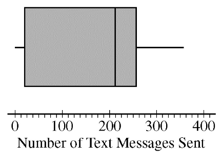

Data were collected on the number of text messages sent by each student in a large high school for one day.
A boxplot of the data is shown below.

Based on the boxplot, which of the following statements is the most reasonable conclusion?
A boxplot displays the range of text messages sent. However, a boxplot is actually unnecessary here since this question refers to the number of students rather than the number of texts.
The first quartile represents the 25th percentile and the third quartile the 75th percentile. The number of students from the minimum to the
first quartile is approximately 25%. The the number of students from the median (50th percentile) to the third quartile (75th percentile) is also 25 percent.